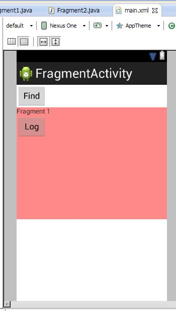
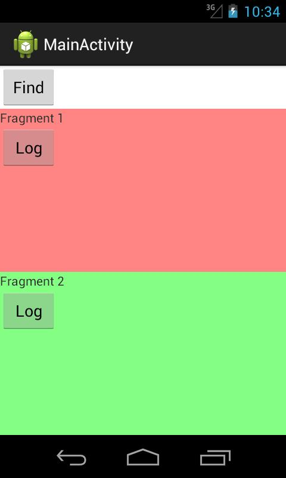
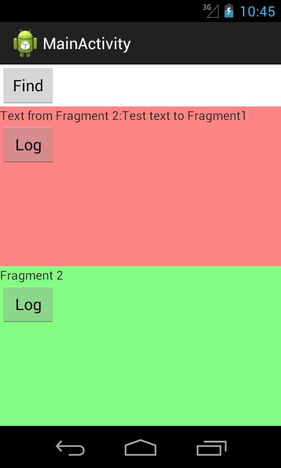

В этом уроке:
- рассмотрим взаимодействие между Activity и ее фрагментами
После размещения фрагмента, хотелось бы начать с ним взаимодействовать. Т.е. размещать View-компоненты и работать с ними, обращаться к фрагментам из Activity и наоборот. Попробуем это реализовать.
Для чистоты эксперимента будем работать с двумя фрагментами: статическим и динамическим.
Создадим проект:
Project name: Lesson106
Package name: com.mycompany.myapp
Build Target: Android 4.0
Application name: FragmentActivity
Create Activity: MainActivity
В strings.xml добавим строки:
<string name="frag1_text">Fragment 1</string>
<string name="frag2_text">Fragment 2</string>
<string name="log">Log</string>
<string name="find">Find</string>Создаем layout и классы для двух фрагментов.
fragment1.xml:
<?xml version="1.0" encoding="utf-8"?>
<LinearLayout
xmlns:android="http://schemas.android.com/apk/res/android"
android:layout_width="match_parent"
android:layout_height="match_parent"
android:background="#77ff0000"
android:orientation="vertical">
<TextView
android:id="@+id/textView"
android:layout_width="wrap_content"
android:layout_height="wrap_content"
android:text="@string/frag1_text">
</TextView>
<Button
android:id="@+id/button"
android:layout_width="wrap_content"
android:layout_height="wrap_content"
android:text="@string/log">
</Button>
</LinearLayout>fragment2.xml:
<?xml version="1.0" encoding="utf-8"?>
<LinearLayout
xmlns:android="http://schemas.android.com/apk/res/android"
android:layout_width="match_parent"
android:layout_height="match_parent"
android:background="#7700ff00"
android:orientation="vertical">
<TextView
android:id="@+id/textView"
android:layout_width="wrap_content"
android:layout_height="wrap_content"
android:text="@string/frag2_text">
</TextView>
<Button
android:id="@+id/button"
android:layout_width="wrap_content"
android:layout_height="wrap_content"
android:text="@string/log">
</Button>
</LinearLayout>Fragment1.java:
package com.mycompany.myapp;
import android.app.Fragment;
import android.os.Bundle;
import android.util.Log;
import android.view.LayoutInflater;
import android.view.View;
import android.view.View.OnClickListener;
import android.view.ViewGroup;
import android.widget.Button;
public class Fragment1 extends Fragment {
final String LOG_TAG = "myLogs";
public View onCreateView(LayoutInflater inflater, ViewGroup container,
Bundle savedInstanceState) {
View v = inflater.inflate(R.layout.fragment1, null);
Button button = (Button) v.findViewById(R.id.button);
button.setOnClickListener(new OnClickListener() {
public void onClick(View v) {
Log.d(LOG_TAG, "Button click in Fragment1");
}
});
return v;
}
}У фрагмента нет привычного для нас метода findViewById для поиска компонентов с экрана. Поэтому вызываем этот метод для View, которое будет содержимым фрагмента. В методе onCreateView мы создаем View и сразу же находим в нем кнопку и ставим ей обработчик. Затем отдаем View системе.
Fragment2.java:
package com.mycompany.myapp;
import android.app.Fragment;
import android.os.Bundle;
import android.util.Log;
import android.view.LayoutInflater;
import android.view.View;
import android.view.View.OnClickListener;
import android.view.ViewGroup;
import android.widget.Button;
public class Fragment2 extends Fragment {
final String LOG_TAG = "myLogs";
public View onCreateView(LayoutInflater inflater, ViewGroup container,
Bundle savedInstanceState) {
View v = inflater.inflate(R.layout.fragment2, null);
Button button = (Button) v.findViewById(R.id.button);
button.setOnClickListener(new OnClickListener() {
public void onClick(View v) {
Log.d(LOG_TAG, "Button click in Fragment2");
}
});
return v;
}
}Все аналогично Fragment1.
Настраиваем основное Activity.
main.xml:
<?xml version="1.0" encoding="utf-8"?>
<LinearLayout
xmlns:android="http://schemas.android.com/apk/res/android"
xmlns:tools="http://schemas.android.com/tools"
android:id="@+id/LinearLayout1"
android:layout_width="match_parent"
android:layout_height="match_parent"
android:orientation="vertical">
<Button
android:id="@+id/btnFind"
android:layout_width="wrap_content"
android:layout_height="wrap_content"
android:onClick="onClick"
android:text="@string/find">
</Button>
<fragment
android:id="@+id/fragment1"
android:name="ru.startandroid.develop.p1061fragmentactivity.Fragment1"
android:layout_width="match_parent"
android:layout_height="wrap_content"
android:layout_weight="1"
tools:layout="@layout/fragment1">
</fragment>
<FrameLayout
android:id="@+id/fragment2"
android:layout_width="match_parent"
android:layout_height="wrap_content"
android:layout_weight="1">
</FrameLayout>
</LinearLayout>Кнопка, компонент fragment, в который помещен Fragment1, и контейнер FrameLayout, в который потом поместим Fragment2.
Обратите внимание на атрибут tools:layout. В нем указан layout-файл, и мы можем на этапе разработки видеть, как будет выглядеть статический фрагмент, когда приложение будет запущено.

Для этого надо нажать правой кнопкой на компоненте fragment, и через пункт Fragment Layout указать нужный layout.
MainActivity.java:
package com.mycompany.myapp;
import android.app.Activity;
import android.app.Fragment;
import android.app.FragmentTransaction;
import android.os.Bundle;
public class MainActivity extends Activity {
@Override
public void onCreate(Bundle savedInstanceState) {
super.onCreate(savedInstanceState);
setContentView(R.layout.main);
Fragment frag2 = new Fragment2();
FragmentTransaction ft = getFragmentManager().beginTransaction();
ft.add(R.id.fragment2, frag2);
ft.commit();
}
}Здесь мы просто добавляем Fragment2 в контейнер.
Все сохраняем, запускаем приложение.

Жмем кнопку Log в первом фрагменте и смотрим лог:
Button click in Fragment1
Жмем Log во втором фрагменте:
Button click in Fragment2
Все ок. Компоненты в фрагментах нашлись и обработчики среагировали на нажатия.
Атрибут onClick, который мы привыкли использовать для кнопки, здесь не прокатит. Указанный в этом атрибуте метод, будет вызван в Activity, а не в фрагменте.
Доступ к фрагменту из Activity
Разберемся, как получить доступ к фрагменту из Activity. Для этого у FragmentManager есть метод findFragmentById, который на вход принимает id компонента fragment (если фрагмент статический) или id контейнера (если динамический).
У нас в main.xml есть кнопка btnFind, вызывающая метод onClick при нажатии. Дорисуем в MainActivity.java метод onClick:
public void onClick(View v) {
Fragment frag1 = getFragmentManager().findFragmentById(R.id.fragment1);
((TextView) frag1.getView().findViewById(R.id.textView))
.setText("Access to Fragment 1 from Activity");
Fragment frag2 = getFragmentManager().findFragmentById(R.id.fragment2);
((TextView) frag2.getView().findViewById(R.id.textView))
.setText("Access to Fragment 2 from Activity");
}Используем метод findFragmentById. В первом случае на вход передаем id компонента fragment, т.к. Fragment1 у нас размещен именно так. При поиске Fragment2 указываем id контейнера, в который этот фрагмент был помещен. В результате метод findFragmentById возвращает нам объект Fragment.
Далее мы получаем доступ к его View с помощью метода getView, находим в нем TextView и меняем текст.
Все сохраняем, запускаем. Жмем кнопку Find

Тексты в фрагментах обновились. Тем самым из Activity мы достучались до фрагментов и их компонентов.
На всякий случай проговорю одну вещь из разряда «Спасибо кэп!». Если посмотреть на код MainActivity, то можно заметить, что работая с frag2 в методе onCreate и с frag2 в методе onClick мы работаем с текущим фрагментом Fragment2. Это так и есть. Оба frag2 в итоге будут ссылаться на один объект. Так что, если вы динамически добавили фрагмент, то у вас уже есть ссылка на него, и искать его через findFragmentById вам уже не надо.
Доступ к Activity из фрагмента
Теперь попробуем из фрагмента поработать с Activity. Для этого фрагмент имеет метод getActivity.
Давайте перепишем обработчик кнопки в первом фрагменте. Будем менять текст кнопки btnFind.
Fragment1.java:
package com.mycompany.myapp;
import android.app.Fragment;
import android.os.Bundle;
import android.view.LayoutInflater;
import android.view.View;
import android.view.View.OnClickListener;
import android.view.ViewGroup;
import android.widget.Button;
public class Fragment1 extends Fragment {
public View onCreateView(LayoutInflater inflater, ViewGroup container,
Bundle savedInstanceState) {
View v = inflater.inflate(R.layout.fragment1, null);
Button button = (Button) v.findViewById(R.id.button);
button.setOnClickListener(new OnClickListener() {
public void onClick(View v) {
((Button)getActivity().findViewById(R.id.btnFind)).setText("Access from Fragment1");
}
});
return v;
}
}Получаем Activity методом getActivity, ищем в нем кнопку и меняем текст.
Сохраняем, запускаем. Жмем кнопку в первом фрагменте:

Работает. Из фрагмента мы поменяли компонент Activity.
Обработка в Activity события из фрагмента
Рассмотрим механизм, который описан в документацие: фрагмент генерирует некое событие и ставит Activity обработчиком.
Например, в Activity есть два фрагмента. Первый – список заголовков статей. Второй – отображает содержимое статьи, выбранной в первом. Мы нажимаем на заголовок статьи в первом фрагменте и получаем содержимое во втором. В этом случае, цель первого фрагмента – передать в Activity информацию о том, что выбран заголовок. А Activity дальше уже сама решает, что делать с этой информацией. Если, например, приложение запущено на планшете в горизонтальной ориентации, то можно отобразить содержимое статьи во втором фрагменте. Если же приложение запущено на смартфоне, то экран маловат для двух фрагментов и надо запускать отдельное Activity со вторым фрагментом, чтобы отобразить статью.
Фишка тут в том, что первому фрагменту неинтересны все эти терзания Activity. Фрагмент – обособленный модуль. Его дело - проинформировать, что выбрана статья такая-то. Ему не надо искать второй фрагмент и работать с ним – это дело Activity.
Тут немного отвлекусь на небольшое лирическое отступление. Модульность, вообще, - очень важная и полезная штука. И ее надо использовать для универсальности, удобности и легкости в понимании работы своих приложений. Но уникальных рецептов, как правильно все организовать, конечно, нет. Каждый делает по-своему. Именно по этим причинам я в своих уроках даю чисто технические вещи про отдельные компоненты и не рассказываю, как организовывать и писать целое приложение. Иначе, форум бы уже ломился от сообщений, что я все делаю не так и надо по-другому, и каждый бы излагал свое видение. И была бы куча споров, где одна сторона говорит, что крокодил зеленый, а другая сторона говорит, что он нифига не зеленый, а длинный ))
Вернемся к уроку. Фрагмент должен сообщить в Activity, что выбрана статья. Для этого он будет вызывать некий метод в Activity. И как нам сообщает документация, лучший способ тут – это использовать интерфейс, который мы опишем в фрагменте и который затем будет реализован в Activity. Схема известная и распространенная. Давайте реализуем. В нашем приложении никаких статей нет, поэтому будем просто передавать произвольную строку из второго фрагмента в Activity. А Activity уже будет отображать эту строку в первом фрагменте.
Перепишем Fragment2.java:
package com.mycompany.myapp;
import android.app.Activity;
import android.app.Fragment;
import android.os.Bundle;
import android.view.LayoutInflater;
import android.view.View;
import android.view.View.OnClickListener;
import android.view.ViewGroup;
import android.widget.Button;
public class Fragment2 extends Fragment {
public interface onSomeEventListener {
public void someEvent(String s);
}
onSomeEventListener someEventListener;
@Override
public void onAttach(Activity activity) {
super.onAttach(activity);
try {
someEventListener = (onSomeEventListener) activity;
} catch (ClassCastException e) {
throw new ClassCastException(activity.toString() + " must implement onSomeEventListener");
}
}
final String LOG_TAG = "myLogs";
public View onCreateView(LayoutInflater inflater, ViewGroup container,
Bundle savedInstanceState) {
View v = inflater.inflate(R.layout.fragment2, null);
Button button = (Button) v.findViewById(R.id.button);
button.setOnClickListener(new OnClickListener() {
public void onClick(View v) {
someEventListener.someEvent("Test text to Fragment1");
}
});
return v;
}
}Описываем интерфейс onSomeEventListener. В нем метод someEvent, который на вход получает строку. Этот интерфейс будет реализовывать Activity.
В методе onAttach мы на вход получаем Activity, к которому присоединен фрагмент. Мы пытаемся привести это Activity к типу интерфейса onSomeEventListener, чтобы можно было вызывать метод someEvent и передать туда строку. Теперь someEventListener ссылается на Activity.
Далее, в onCreateView, в обработчике кнопки мы вызываем метод someEvent и передает туда текст. Этот метод будет отработан в Activity.
Теперь меняем Activity.
MainActivity.java:
package com.mycompany.myapp;
import ru.startandroid.develop.p1061fragmentactivity.Fragment2.onSomeEventListener;
import android.app.Activity;
import android.app.Fragment;
import android.app.FragmentTransaction;
import android.os.Bundle;
import android.widget.TextView;
public class MainActivity extends Activity implements onSomeEventListener{
@Override
public void onCreate(Bundle savedInstanceState) {
super.onCreate(savedInstanceState);
setContentView(R.layout.main);
Fragment frag2 = new Fragment2();
FragmentTransaction ft = getFragmentManager().beginTransaction();
ft.add(R.id.fragment2, frag2);
ft.commit();
}
@Override
public void someEvent(String s) {
Fragment frag1 = getFragmentManager().findFragmentById(R.id.fragment1);
((TextView)frag1.getView().findViewById(R.id.textView)).setText("Text from Fragment 2:" + s);
}
}Дописываем интерфейс onSomeEventListener к описанию класса.
onCreate без изменений.
Реализуем метод someEvent. Просто ищем первый фрагмент и вставляем туда текст.
Все сохраняем и запускаем. Жмем кнопку во втором фрагменте:

Второй фрагмент передал через интерфейс строку в Activity, а оно нашло первый фрагмент и отобразило там эту строку.